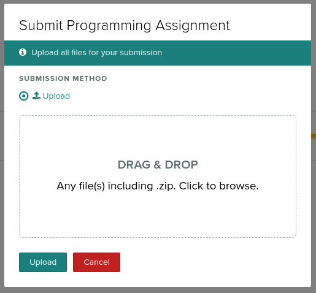
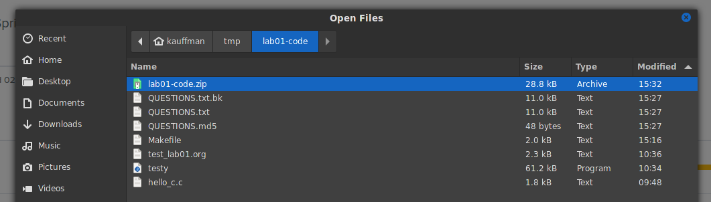
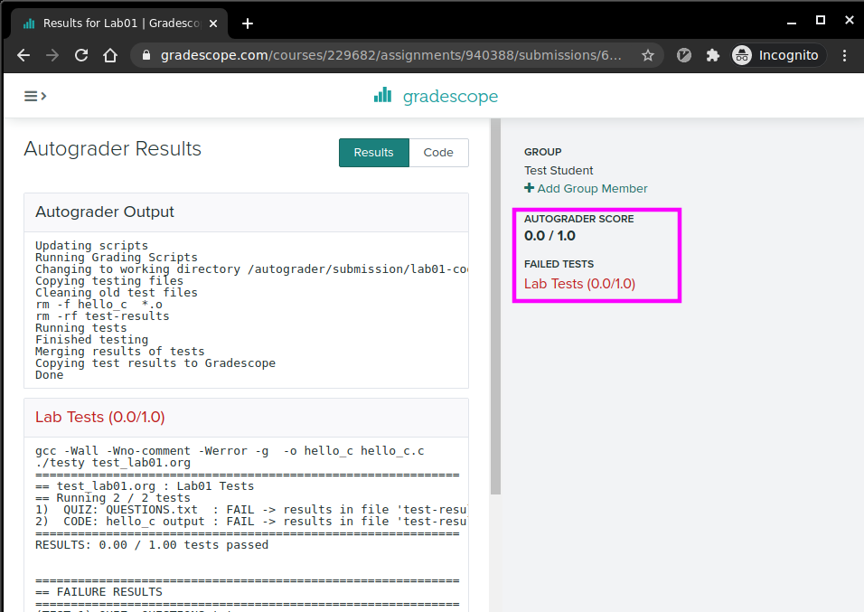
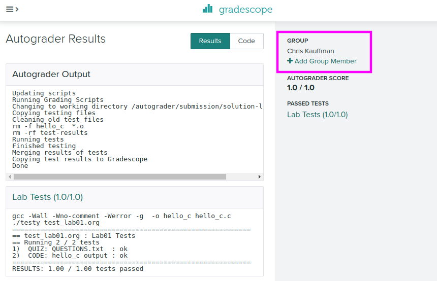
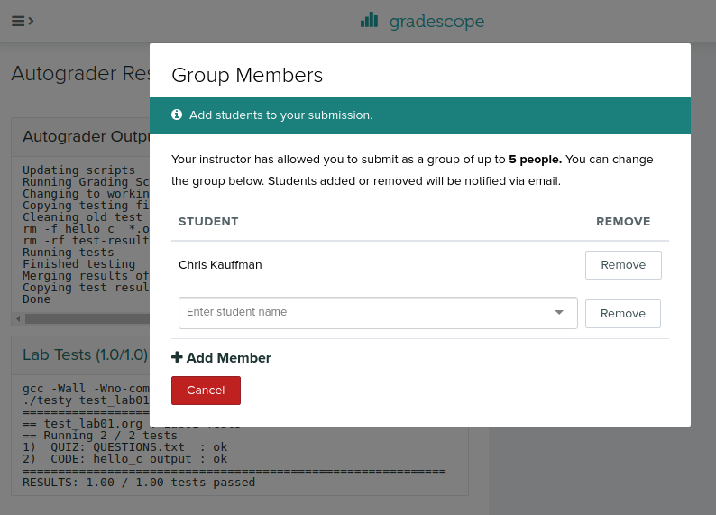

CSCI 2021 Lab02: Compiling / Testing C Code
- Due: 11:59pm Tue 1/26/2021 on Gradescope
- Approximately 0.83% of total grade
CODE DISTRIBUTION: lab01-code.zip
- Download the code distribution
- See further setup instructions below
CHANGELOG: Empty
1 Rationale
This lab will introduce students to the basic UNIX programming environment which will be used throughout the course. Staff will be on hand to help students set up their environment and complete the lab work.
A UNIX environment is needed to complete the exercises and students are encouraged to work through the Accessing Unix/Linux Programming Environments tutorial to get their environment set up.
Grading Policy
Credit for this Lab is earned by completing the exercises here and
submitting a Zip of the work to Gradescope. Students are responsible
to check that the results produced locally via make test are
reflected on Gradescope after submitting their completed
Zip. Successful completion earns 1 Engagement Point.
Lab Exercises are open resource/open collaboration and students are encouraged to coopearte on labs. Students may submit work as groups of up to 5 to Gradescope: one person submits then adds the names of their group members to the submission.
See the full policies in the course syllabus.
2 Codepack
The codepack for this lab is linked at the top of this document. Always download it and unzip/unpack it. It should contain the following files which are briefly described.
| File | Use | Description |
|---|---|---|
QUESTIONS.txt |
EDIT | Questions to answer: fill in the multiple choice selections in this file. |
hello.c |
EDIT | C file to; edit it to complete for testing |
QUESTIONS.txt.bk |
Backup | Backup copy of the original file to help revert if needed |
Makefile |
Build | Enables make test and make zip |
testy |
Testing | Test running scripts |
test-lab01.org |
Testing | Tests for this lab |
3 Setup
- Staff will briefly survey these instructions and then ask students to form groups to work on the lab exercises. Take this as an opportunity to meet some classmates: having a community of support makes any class easier to handle
- You are NOT required to work in a group but many students find it helpful to form some connections to help them throughout the semester and Labs are a place you might do that.
- Find out if group members complement you: if they have the same questions, are using a similar platform (Windows/Mac), listen to when you talk about something, or generally seem friendly, it's likely you can help each other. Consider swapping contact information to work again in the future.
- Spend some time Getting access to a Unix Environment using this tutorial Accessing Unix/Linux Programming Environments. *Request help from Staff if you are having trouble with your environment*. If you are in a hurry, you can use Vole through a web browser.
4 Overview of Labwork
- If at any point you become confused by what to do next ask for help from your labmates or course staff.
Download the
lab01-code.zipfile linked at the top of this document into your Unix environment and unzip it. In most UNIX environments you can use the terminal command> unzip lab01-code.zip
to accomplish this. A number of files will be created in a the new folder
lab01-code/.- Find and open the
QUESTIONS.txtfile in a text editor which contains further instructions on what to do. There are several asks to play with basic UNIX commands. Execute the commands indicated and observer their results. Some parts of the text file are marked with
QUESTIONand have multiple choices. Mark the correct response as follows:QUESTION: Which of these is correct? - ( ) This is a wrong answer - ( ) This is also wrong - (X) This is the correct answer - ( ) And another wrong answer
When you have filled in all your answers, check them via
> make test-quiz
Some activities will be based on writing CODE and marked as such. These will involve editing a file like the provided
hello.cto complete it. Once you have completed the code necessary check it via> make test-code
You can run tests for both the QUIZ and CODE sections with
> make test
which you should always do prior to submitting
When you complete the QUIZ and CODE questions, create a zip of your lab work via
> make zip
and then upload the file to Gradscope as per the instructions in the last section.
5 QUESTIONS.txt File Contents
Below are the contents of the QUESTIONS.txt file for the lab.
Follow the instructions in it to complete the QUIZ and CODE questions
for the lab.
__________________
LAB 02 QUESTIONS
__________________
Lab Instructions
================
Follow the instructions below to experiment with topics related to
this lab.
- For sections marked QUIZ, fill in an (X) for the appropriate
response in this file. Use the command `make test-quiz' to see if
all of your answers are correct.
- For sections marked CODE, complete the code indicated. Use the
command `make test-code' to check if your code is complete.
- DO NOT CHANGE any parts of this file except the QUIZ sections as it
may interfere with the tests otherwise.
- If your `QUESTIONS.txt' file seems corrupted, restore it by copying
over the `QUESTIONS.txt.bk' backup file.
- When you complete the exercises, check your answers with `make test'
and if all is well, create a zip file with `make zip' and upload it
to Gradescope. Ensure that the Autograder there reflects your local
results.
- IF YOU WORK IN A GROUP only one member needs to submit and then add
the names of their group.
Linked List Application
=======================
QUIZ Build Commands
~~~~~~~~~~~~~~~~~~~
After downloading and unzipping the lab code, TAs will demonstrate how
to compile the `list_main' application using a provided `Makefile' and
the command `make'. They will demonstrate how to run several other
useful commands via `make'. These are as follows:
To remove all the compiled files (executable programs and `.o' files),
the use `make' as follows:
- ( ) make sanitize
- ( ) make clean
- ( ) make remove
- ( ) make gc
To run the automated tests for the code through the given `Makefile'
use the following command
- ( ) make test
- ( ) make verify
- ( ) make examine
- ( ) make unit
To run only test #2 (which initially fails) and show the results, use
the following `make' command:
- ( ) make test2
- ( ) make testnum2
- ( ) make testnum=2
- ( ) make test testnum=2
If I change code and want to see if any more tests pass after the
change, I should type
- ( ) `make' to rebuild followed by `make test' to run tests
- ( ) `make clean' followed by `make' followed by `make test'
- ( ) `make test' will rebuild based on changes AND then run tests
- ( ) ALL of these will work but `make test' is the shortest and
sweetest.
Since compiling C programs involving several files is a bit painful,
we will provide a `Makefile' on all of the course projects and the
conventions outlined here will be followed to make life easier.
Importantly, **passing automated tests will be part of project
grades** so make sure you know how to run the tests.
CODE for Linked List Application
================================
This lab's code pack contains an application featuring a linked
list. The code is divided into an interactive `main()' function in
`list_main.c' and a number of application. This application is
described in some more detail in HW02 which is released this
week. Refer to HW02 for more information on it. You are encouraged to
*study this program carefully* because
- It demonstrates MANY common and useful techniques in C
- You will need to write one like it in an upcoming project
The `list_main' program has two problems that must be corrected to
complete it.
1. The builtin `get' command produces some errors. This will require
editing the associated C function in `list_funcs.c' to correct it.
2. The `contains' command is not implemented which will require adding
a function to `list_funcs.c' and adding that command to
`list_main.c'.
Refer to HW02 for more detail. The objective is to fix the code so all
tests for it pass:
,----
| > make test-code
| gcc -Wall -Wno-comment -Werror -g -c list_main.c
| gcc -Wall -Wno-comment -Werror -g -c list_funcs.c
| gcc -Wall -Wno-comment -Werror -g -o list_main list_main.o list_funcs.o list.h
| ./testy test_list_main.org
| ============================================================
| == test_list_main.org : list_main application tests
| == Running 4 / 4 tests
| 1) Print then Exit : ok
| 2) Insert 3 and Print : ok
| 3) Get Command : ok
| 4) Contains Items : ok
| ============================================================
| RESULTS: 4 / 4 tests passed
`----
Submitting a Zip for Gradescope
===============================
Once you have your QUIZ answers for the `QUESTIONS.txt' file correct
and your CODE completed, do one final check via `make test' and then
create a zip archive with `make zip' and upload it to Gradescope.
Don't forget to add any other group members you worked with.
6 Submission
6.1 Check via make test
Once you have your QUIZ answers for the QUESTIONS.txt file correct and your CODE completed, do one final check via make test:
> make test ./testy test_lab01.org ============================================================ == test_lab01.org : Lab01 Tests == Running 2 / 2 tests 1) QUIZ: QUESTIONS.txt : ok 2) CODE: hello_c output : ok ============================================================ RESULTS: 1.00 / 1.00 tests passed
6.2 Create a Zip
If everything looks ok, you are ready to submit. Do so by creating a zip file via make zip
> make zip rm -f hello_c *.o rm -rf test-results rm -f lab01-code.zip cd .. && zip "lab01-code/lab01-code.zip" -r "lab01-code" zip warning: name not matched: lab01-code/test_lab01.org~ adding: lab01-code/ (stored 0%) adding: lab01-code/QUESTIONS.md5 (stored 0%) adding: lab01-code/QUESTIONS.txt (deflated 61%) adding: lab01-code/QUESTIONS.txt.bk (deflated 61%) adding: lab01-code/testy (deflated 73%) adding: lab01-code/hello_c.c (deflated 51%) adding: lab01-code/Makefile (deflated 60%) adding: lab01-code/test_lab01.org (deflated 47%) Zip created in lab01-code.zip
6.3 Submitting to Gradescope
The zip file named lab01-code.zip should be uploaded to Gradescope under the Lab01 assignment. Once uploaded, the same make test check will be run and you should verify its success as this will earn you your lab Engagement Point (1% of your overall grade).
The following pictures illustrate how to submit the code.







Make sure to check that your submission passes tests online; otherwise you'll lose out on your Engagement Point. You can resubmit as many times as you wish up to the Lab deadline (usually Tuesday nights).
No late submission are accepted for lab work.
6.4 Adding Group Members
IF YOU ARE WORKING IN A GROUP: only one student needs to upload the Zip file and can add up to 4 other students (groups of 5) to the submission who will also receive credit for the lab work.
The following pictures show where you can add group members AFTER uploading a Zip file.

